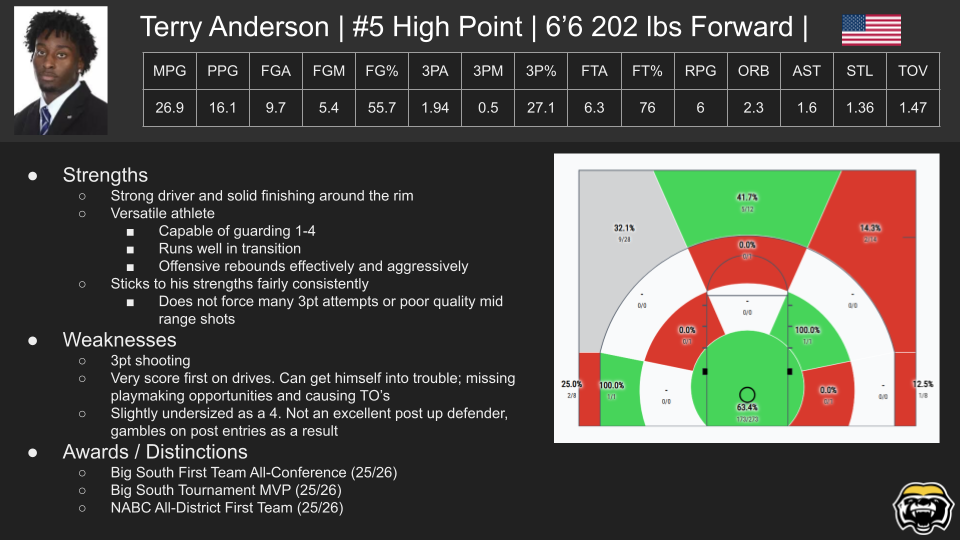
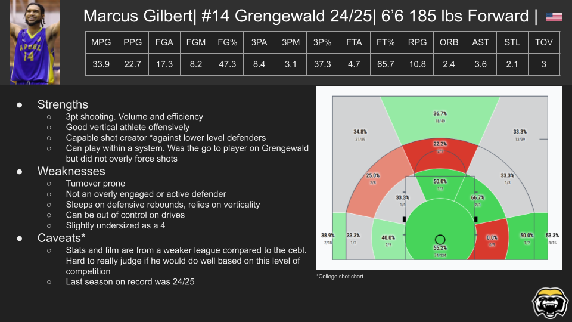
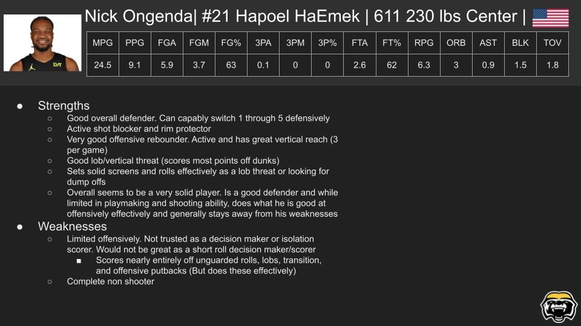
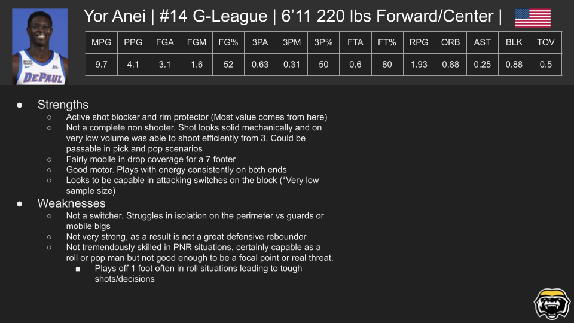
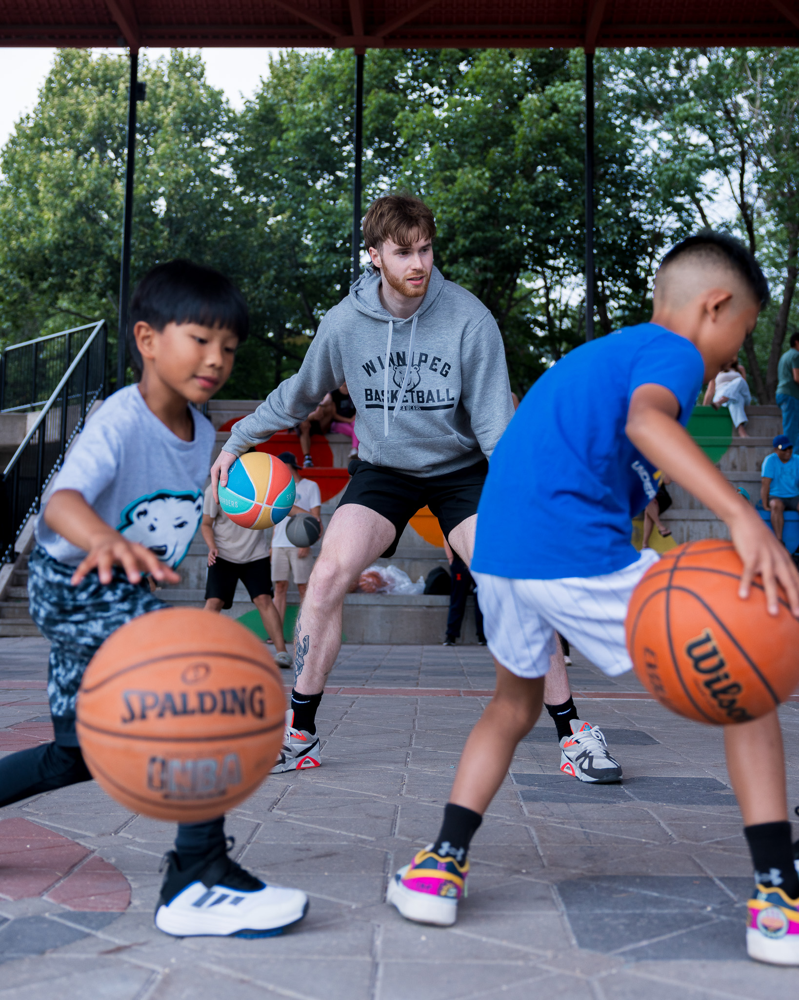

Prospective Player 01
Wing evaluation — shooting, transition, and defensive versatility.

I was tasked with creating a "Target Time Report" on our semi-finals matchup. In this report I analyzed the Niagara River Lions 10 most recent games, detailing key contributors, most common sets and PNR combinations, and primary means of scoring. This report was used by the coaching staff to help influence our late game strategy which ultimately led to a CEBL championship game appearance.
[Write a brief explanation of the role these videos played in the signing/scouting process.]

Wing evaluation — shooting, transition, and defensive versatility.

Wing evaluation — shooting, transition, and defensive versatility.

Wing evaluation — shooting, transition, and defensive versatility.

Wing evaluation — shooting, transition, and defensive versatility.
[Explain what you tracked, when you tracked it, how the information was organized, and how the output supported the staff.]


[Write your own explanation of your responsibilities, the audience, the type of content you produced, and what you learned about communicating basketball ideas.]